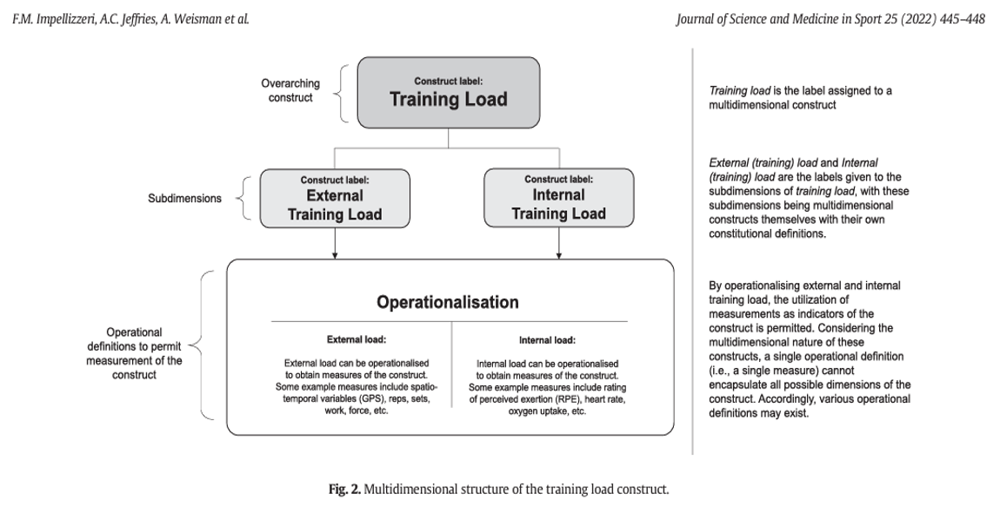
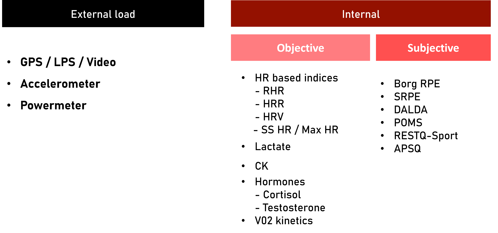
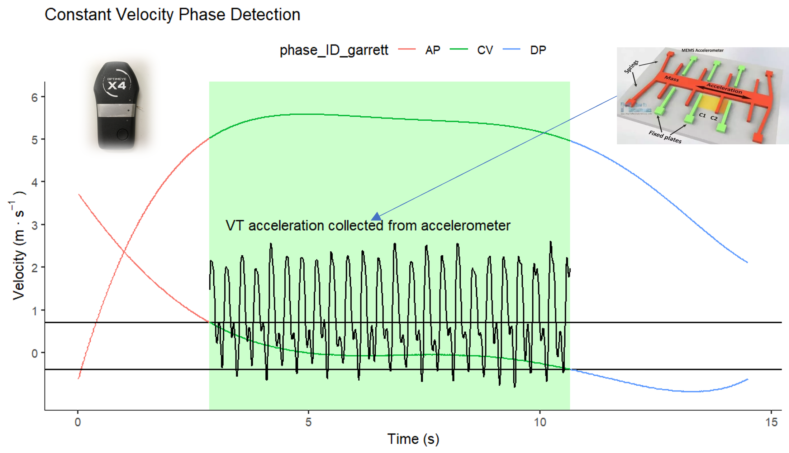

6 Week 10 - Practical
6.1 Learning Outcome:
Apply measurement accuracy concepts to exercise testing and measurement
Demonstrate basic data processing and analytical techniques
Communicate test results and their implications to hypothetical client scenarios
6.2 Practical Goals:
⢠Explore athlete monitoring tools and technologies: Gain both theoretical and practical knowledge of the different tools available for monitoring athletes and how they fit within the AES scope of practice.
⢠Apply monitoring techniques in real-world settings: Experience hands-on the practical application of athlete monitoring technologies, improving your ability to gather, interpret, and apply data to enhance athletic performance.
⢠Enhance professional practice skills: Develop skills that align with the professional standards required for an AES, focusing on the integration of technology and practical tools to improve athlete outcomes.
⢠Understand training load: Develop a foundational understanding of the training load construct and its sub dimensions (e.g., internal versus external load), as well as how these are operationalised in practice to effectively monitor athlete physiology and performance.
6.3 Background:
Over the last two weeks in seminar material we have discussed the construct of “Training Load”. Importantly we can think of training load being made up of two sub dimensions Internal and External load. Internal Load can be further subdivided into Objective and Subjective markers.
External load: Can quite simply just been thought of as a measure of how much work was done. e.g. 5km of running, 1000 steps, 100m swim.
Internal load: Is a measure of the bodies response to performing the external load. Most commonly used measures are Heart rate based indices that were discussed in Week 4. Internal load can also represent biochemical markers (Creatine Kinase, Lactic Acid), Hormonal responses (Testosterone, Cortisol) or Immunological markers (IGA, IL1,6). The above would be considered objective internal load makers whilst measures based on perception of effort assessing mood such as Borg,Session RPE, Profile of Mood States, DALDA or simply Athlete Reported Outcome Measures would be considered subjective makers of internal load.
Below is a picture taken from the Seminar 9 - Lecture which gives the contemporary organisational understanding of how we think can about training load.

It is also common for practitioners to add one more level of nomenclature when talking about load as we highlighted above and that is objective and subjective.

And finally, another way that “Training load” has been conceptualized within the literature is from Vanrenterghem and Drust (2017)

From a pure scientific perspective these systems are intrinsically linked that thinking about them as two separate pathways is not entirely appropriate, but as we will show below it can have some utility for thinking about what systems are ultimately producing or absorbing energy.
6.4 A worked example
6.4.1 The experience
Think about sessions you’ve done with short, sharp shuttles — lots of turning, stopping and starting. Your heart rate was high, your legs were burning, but you barely covered any distance. Now think about a long steady run — heaps of metres covered but it felt relatively comfortable.
If distance tells us how hard a session was, why doesn’t it match how it felt?

6.4.2 Changing speed costs energy
A moving body has kinetic energy. To change speed — speeding up or slowing down — energy must be either added to or removed from the system.
\[ KE = \frac{1}{2}mv^2 \]
The \(v^2\) is important — each additional m/s of speed costs progressively more energy. Let’s work through it for a 75 kg athlete:
\[ 0 \rightarrow 1 \text{ m/s}: \quad \Delta KE = \tfrac{1}{2} \times 75 \times 1^2 - \tfrac{1}{2} \times 75 \times 0^2 = 37.5 - 0 = \textbf{37.5 J} \]
\[ 1 \rightarrow 2 \text{ m/s}: \quad \Delta KE = \tfrac{1}{2} \times 75 \times 2^2 - \tfrac{1}{2} \times 75 \times 1^2 = 150 - 37.5 = \textbf{112.5 J} \]
\[ 2 \rightarrow 3 \text{ m/s}: \quad \Delta KE = \tfrac{1}{2} \times 75 \times 3^2 - \tfrac{1}{2} \times 75 \times 2^2 = 337.5 - 150 = \textbf{187.5 J} \]
Notice how the same 1 m/s increase costs progressively more energy — 37.5 J, then 112.5 J, then 187.5 J. That’s the \(v^2\) doing its work. This is why repeated accelerations are so demanding, and why short shuttles at moderate speeds cost more energy than the distance alone suggests.
6.4.3 Maintaining speed still costs energy
So acceleration is expensive. But what about when you’re just running at a steady pace — is that free? No.
Even without changing speed, the body burns fuel to maintain the running gait — muscles contracting, tendons loading, legs swinging every stride. The rate of fuel consumption (metabolic power, in W/kg) is:
\[ P_{met} = C_r \times v \]
For example:
\[ P_{met} = 3.6 \text{ J/kg/m} \times 3.89 \text{ m/s} = \textbf{14.0 W/kg} \text{ at 14 km/h} \]
Where \(C_r \approx 3.6\) J/kg/m is the energy cost of running on flat ground — about 3.6 joules per kilogram of body mass per metre covered. This is the baseline metabolic cost — it’s always present. HR reflects it even when speed isn’t changing. Think of it like a car on a motorway at constant speed: the engine is still burning fuel even though nothing is changing.
6.4.4 Deceleration costs energy too — but where does it go?
When you slow down, kinetic energy doesn’t vanish — conservation of energy tells us it has to go somewhere. But here’s the key: that energy doesn’t show up proportionally through the traditional metabolic pathways we typically monitor (HR, VO2). Instead, it’s largely dissipated as heat through structural deformation: muscles lengthening under load, tendons and connective tissue absorbing impact forces.
6.4.5 Interactive metabolic power calculator
Acceleration: energy flows through chemical/metabolic pathways. Muscles produce force concentrically, ATP is consumed, O2 demand rises. The cardiovascular system pays — HR goes up.
Deceleration: energy is absorbed through structural/mechanical pathways. Muscles lengthen eccentrically, tissue deforms, energy becomes heat. The cardiovascular system barely registers it —HR stays low. But the muscles are absorbing real energy — and they’ll let you know about it tomorrow.
This is the same magnitude of energy involved in both directions, but the body handles it through different pathways. Producing force concentrically (accelerating) is metabolically expensive — muscle efficiency is only ~25%. Absorbing force eccentrically (decelerating) is metabolically cheap but structurally costly.
This is why Vanrenterghem et al. (2017) proposed thinking about training load along a physiological–biomechanical continuum. While it’s not technically correct to treat these as completely separate systems, some activities emphasise energy transfer through chemical/metabolic pathways, whilst others emphasise energy transfer through structural/mechanical pathways.
In today’s practical, you’ll experience three protocols that sit at different points on this continuum — and compare what your HR tells you versus what your legs tell you.
Accelerating: The fuel pump increases flow. The engine burns more fuel. The fuel gauge drops. In humans: the metabolic system pays. O2 demand rises, HR climbs. The body “burns fuel” to produce force.
Cruising: Steady fuel flow. Engine ticking over efficiently. In humans: baseline metabolic cost (\(C_r \times v\)). HR steady. This is the most efficient phase per metre covered.
Braking: The engine is barely working — almost no fuel consumed. But the brake pads absorb the kinetic energy as heat. The brake pads wear out. In humans: metabolic cost drops — HR doesn’t reflect it. But muscles absorb the KE eccentrically. Tissue takes the load.
The brake pad question: What happens to brake pads when you brake hard and often? They overheat. They wear down. Now imagine a session with 30 short shuttles — that’s 30 hard braking events. Each one requires the muscles to produce large eccentric forces to absorb kinetic energy. The structural cost accumulates — microdamage to muscle fibres, inflammation, soreness the next day. HR won’t tell you this happened. But your legs will.
6.4.6 A note on efficiency
Humans aren’t perfectly efficient energy converters, and the efficiency changes depending on the activity. Producing force concentrically (accelerating) is metabolically expensive - muscle efficiency is only ~25%. Absorbing force eccentrically (decelerating) is metabolically cheap but structurally costly. The same magnitude of energy is involved, but the body handles it through different pathways depending on the direction.
6.5 Activity
In this weeks activity we are going to use a combination of external load and internal load markers as measured via integrated GPS/IMU and HR device from the Polar Team System and subjective outcome measures. This should help build your intuition around how interpreting both internal and external load can be useful in both categorising intensity of drills.
Your tutor will run you through some different task to highlight how different activities can elicit similar subjective HR responses.
Rating of Perceived Exertion
6.5.0.1 Save Results
| Protocol | Distance | HR | RPE |
|---|---|---|---|
| Continuous | |||
| Intermittent | |||
| Cross Training |
6.5.1 Test your learning
What is the key difference between external and internal load?How should external and internal load measures be used together in practice? q10